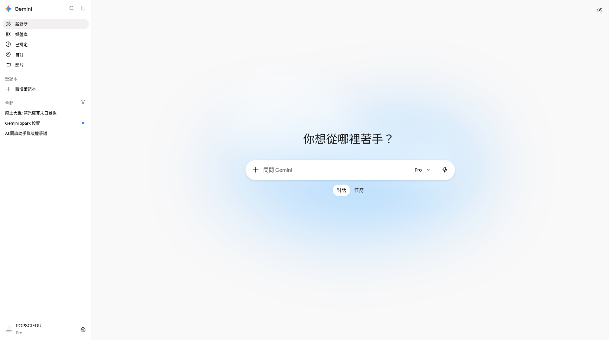
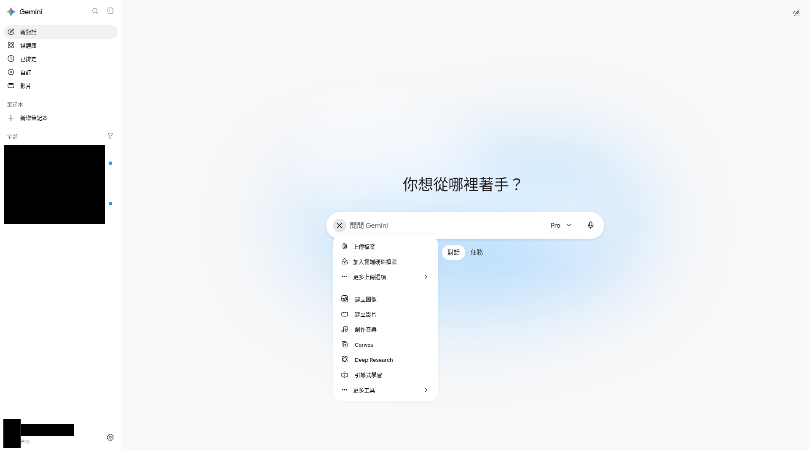
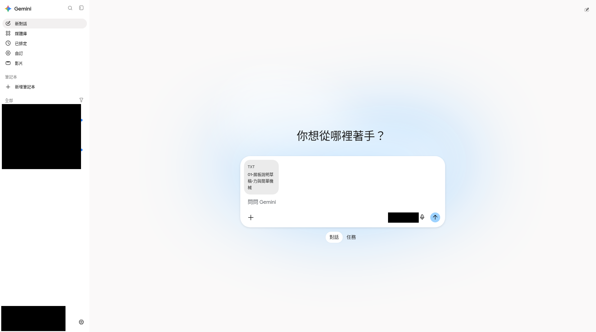
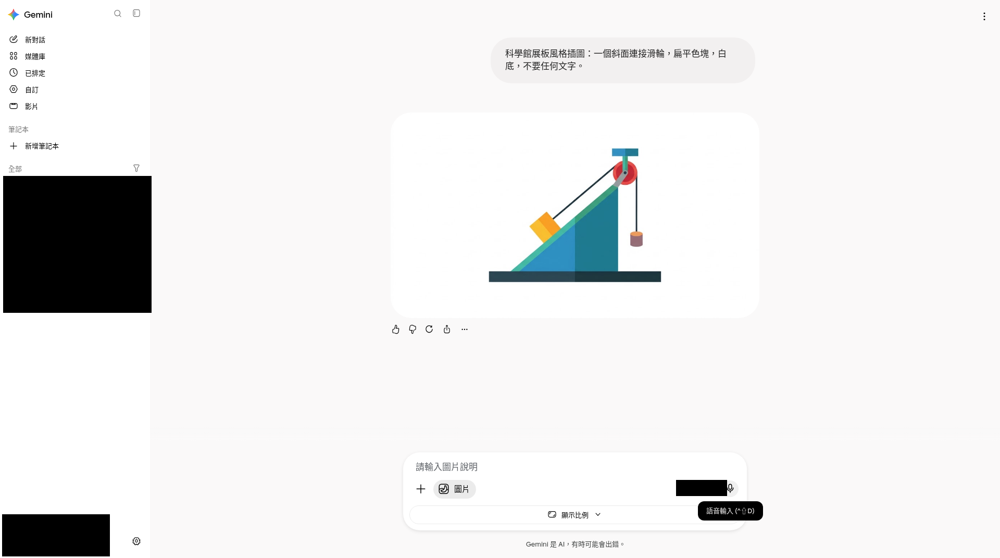

第一章 · 網頁版上手（FREE）
登入、介面、模型與多模態
目標：在 FREE 帳熟悉首屏、＋選單、模型（無 Auto）、上傳與匯出。用量養成看「設定→用量」。
Free
CASE打開網頁，確認你登入的是練習用 FREE Google 帳，準備稍後上傳導賞稿。
開站與首屏
開啟 gemini.google.com 並登入

Free 對照 已登入首屏（點圖放大） 
Free 對照 側欄、輸入框、工具方向 
FREE 功能線 網頁版 · FREE 功能線（popsciedu）；個資已遮黑 示範帳訂閱徽章可能與 FREE 功能線不一致（以功能線／使用者指定分工為準：popsciedu＝FREE、wayneleong＝Plus、awwgj4p65t＝Pro）。
新聊天＝一個主題一串

Free 對照 空白輸入與工具列 打開＋選單看工具
常見：上傳、雲端硬碟、圖像、Canvas、Deep Research 等——以 FREE 帳實際顯示為準。

Paid／示範曾用 Pro；本課主線 FREE 附加／工具列現況 
FREE 功能線 網頁版 · FREE 功能線（popsciedu）；個資已遮黑 示範帳訂閱徽章可能與 FREE 功能線不一致（以功能線／使用者指定分工為準：popsciedu＝FREE、wayneleong＝Plus、awwgj4p65t＝Pro）。
模型選單（無 Auto）
2026-10 實況常見無 Auto；可見 Flash-Lite／Flash／Pro／Argon 與思考程度。FREE 碰到上限就改較輕模型。

多模態與匯出
上傳圖片先問「你看到什麼」

Free 對照 附加圖片後縮圖 上傳導賞稿（materials）
上傳來源檔（示範為 txt／亦可 PDF）。

FREE 功能線 網頁版 · FREE 功能線（popsciedu）；個資已遮黑 · 示範上傳 materials txt 匯出
常見 .md／雲端硬碟；勿硬找不存在的「Google 文件」按鈕。

Free 對照 匯出／下載選單
產圖／Live（介紹）
Live 暫非網頁——語音 Live 用手機 App 示範即可，本課不要求跟做。


課程示意成品（非 Gemini 實產，供對照風格）：


待補 · 手機 Live
應出現：f13-mobile-live.png：App Live 首屏（介紹用）
見
見
SHOTS_NEEDED.md；請用 FREE 帳自截或等補圖。C1Q1
本課實作主線帳號等級是？